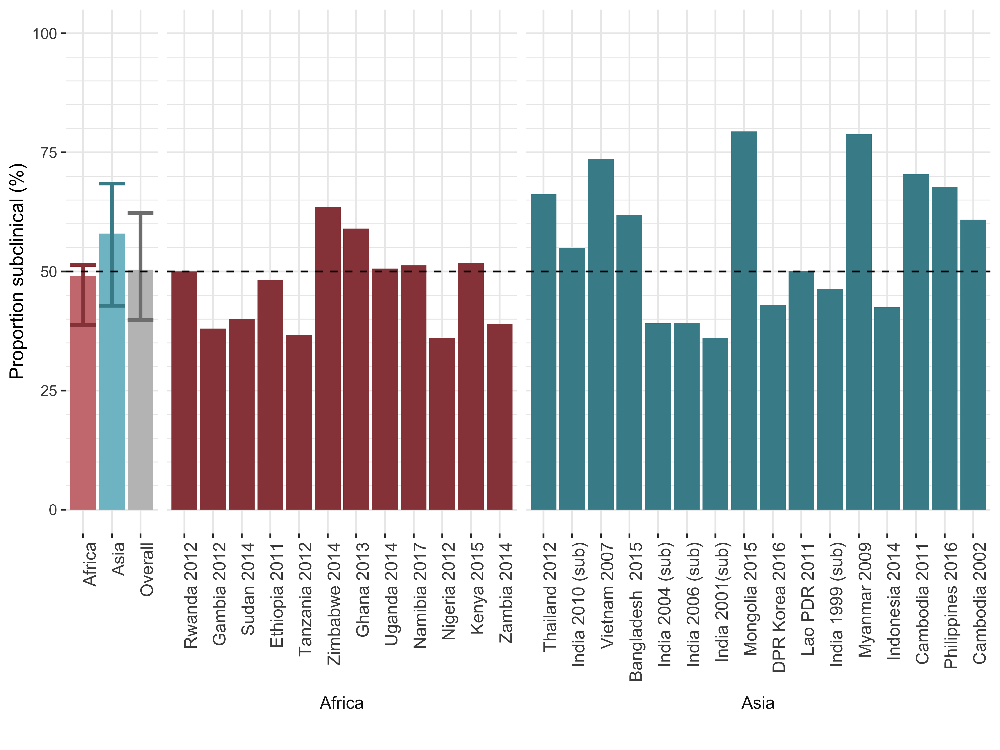

TBornotTB is a project that aims to better understand how tuberculosis (TB) develops in individuals and spreads in populations. For a public health threat that has caused over two billion deaths in human history the so-called natural history of TB has remained stubbornly elusive. The classic paradigm of TB natural history typically accounts for two distinct stages of infection and disease, and one-way progression between them. However, data has shown that individuals can actually experience disease across a spectrum intensity, which varies over time.
Before the TBornotTB project, little was known on how many individuals are currently in the different stages of disease, how long they remain there, and how much they contribute to ongoing transmission. If we however better understand the reality of TB in a population, the limited resources available can be used more effectively to reduce the burden of disease, thus saving lives now, and reducing transmission in the future. That is why TBornotTB has two main objectives. First to bring together old and new data to understand how the new states of TB infection and disease are. Second to use mathematical modelling tools to show the consequences, which should help improve TB policies.
Our work so far has shown that around half of individuals who can transmit the disease, do not have, or are not aware of symptoms (which we call ‘subclinical disease’), as illustrated in figure 1. In addition, we have shown how some people recover from their infection without ever getting TB disease or treatment (which we call ‘self-clearance’). Upcoming work will show how, and how many people with subclinical disease progress to disease or regress, and how infectious they are. In times of COVID-19 pandemic, we applied our learning from subclinical tuberculosis to asymptomatic SARS-CoV-2 infections. We re-analysed data from the Diamond Princess outbreak, and showed that over two-thirds of infections were asymptomatic, and may have contributed substantially to ongoing transmission (see figure 2).
Figure 1 